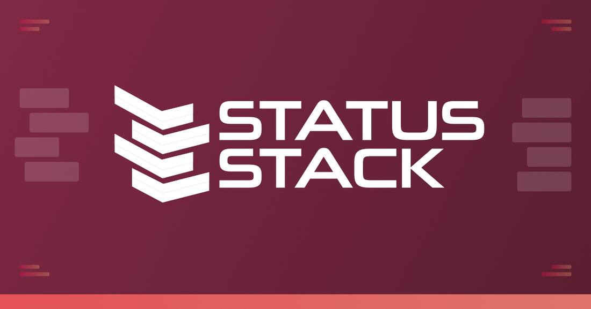
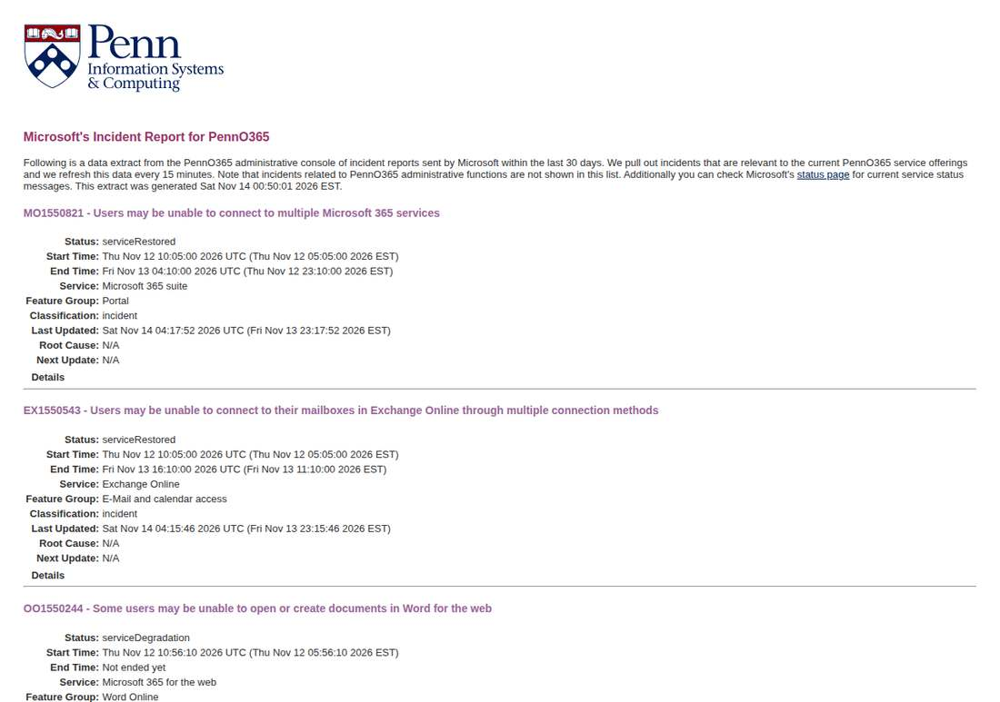

Microsoft 365 Outage Fully Closed as Business and Exchange Incidents Marked Service Restored
Update to flashes 331 through 354, 359 and 360: the Microsoft 365 outage is fully closed. The University of Pennsylvania's mirror of Microsoft's Service Health admin console, read at about 05:48 UTC on November 14, 2026, lists the business incident MO1550821 as serviceRestored with a final update at 04:17:52 UTC, and the Exchange Online incident EX1550543 as serviceRestored with a final update at 04:15:46 UTC. Two independent trackers, StatusStack and EpiFive, report the same final entries. Both incidents ran from 10:05 UTC on November 12 to 16:10 UTC on November 13. The final updates repeat the capacity-upgrade explanation and promise a preliminary post-incident report within two business days and a final report within five. Microsoft's public status page still showed service degradation at 05:48 UTC and lags the admin console.

- 01THE CLOSURE — The University of Pennsylvania's mirror of Microsoft's Service Health admin console, read at about 05:48 UTC on November 14, 2026, lists the business incident MO1550821 as serviceRestored with a final update at 04:17:52 UTC, and the Exchange Online incident EX1550543 as serviceRestored with a final update at 04:15:46 UTC. StatusStack and EpiFive independently report the same final entries. The consumer incident was already remediated in flash 360.
- 02THE CAUSE — Both final updates repeat the same wording: a technical issue not related to cyber or AI agents, introduced by an issue during an earlier network capacity upgrade that surfaced following a recent network change. Microsoft says it addressed the underlying issue, restored services gradually while validating stability at each stage, and continues to restore service to remaining customers and regions. The outage ran from 10:05 UTC on November 12 to 16:10 UTC on November 13.
- 03THE WATCHPOINT — The preliminary post-incident report is due within two business days and the final report within five. It should name the upgrade, the change that surfaced it, and the traffic that froze recovered servers. Watch whether Microsoft's public status page flips from service degradation to restored; it still showed degradation at 05:48 UTC with a stale timestamp.
WHAT HAPPENEDWhat Happened
The Microsoft 365 outage is now fully closed. The University of Pennsylvania's mirror of Microsoft's Service Health admin console, read at about 05:48 UTC on November 14, 2026, lists both remaining incidents as serviceRestored: the business incident MO1550821, with a final update at 04:17:52 UTC, and the Exchange Online incident EX1550543, with a final update at 04:15:46 UTC. Two independent trackers, StatusStack and EpiFive, report the same final entries at 11:15 and 11:17 p.m. EST on November 13. The consumer incident was already remediated in flash 360; with the business and Exchange closures, every part of the outage that began at 10:05 UTC on November 12 is now marked restored, ending at 16:10 UTC on November 13, about 30 hours later.
The final updates repeat the same wording for both incidents: a technical issue not related to cyber or AI agents, introduced by an issue during an earlier network capacity upgrade that surfaced following a recent network change. Microsoft says it addressed the underlying issue and continues to restore service to remaining customers and regions, having restored services gradually and validated stability at each stage. The updates also close the loop on the two interim posts from about 02:13 and 02:17 UTC, which reported continued recovery and promised a next update by 04:30 UTC; the final entries landed just before that deadline, replacing the 22:00 UTC update covered in flash 354 as the latest word on both incidents.
The closure also answers the backlog test Microsoft set for itself. The 22:00 UTC update had said the incident would not be considered resolved until every queued email message had processed successfully, and the consumer remediation in flash 360 passed that test first. The business and Exchange final statuses now apply the same closure to the workplace side: Copilot Chat, the OpenAI and Anthropic Microsoft 365 connectors, Teams calendars, SharePoint, Defender, Purview, Planner, To Do, Intune and Power BI, all of which depended on Exchange Online, are no longer listed under an open incident. What remains is the post-incident report, promised in preliminary form within two business days and in final form within five.
WHY IT MATTERSThe public page lags the admin console, and that lag matters
Microsoft's public status page still showed service degradation at 05:48 UTC on November 14, more than an hour after the admin console marked both incidents restored, with a last-updated stamp stuck at 12:08:53 AM UTC on November 13. Anyone checking only the public page would still believe the outage is open. The admin console is the record Microsoft's own administrators see, and the UPenn mirror republishes it verbatim every 15 minutes; two independent trackers read the same final entries. The closure is real, but the public page's lag is a reminder that Microsoft runs two status surfaces that do not move together, and the slower one is the one most customers see.
For the AI stack the closure is the end of a three-day exposure. Copilot Chat and the OpenAI and Anthropic Microsoft 365 connectors sat on the business side of this incident, returning errors for mail, calendar and search requests for more than 24 hours, and OpenAI reported trouble connecting ChatGPT to Microsoft 365. With EX1550543 and MO1550821 both restored, the mailbox layer those tools read from is back under a closed incident, not a recovering one. The distinction matters for anyone deciding whether to trust Copilot or the connectors with live work again: recovery was declared complete by the same system that declared the outage, not by a press statement.
WHAT TO WATCHThe preliminary report, then the final one
The next fact is the preliminary post-incident report, due within two business days, followed by the final report within five. It should answer the questions the final updates leave open: which network capacity upgrade introduced the issue, what the recent network change was that surfaced it, why restored servers froze again under traffic at 00:00 and 04:22 UTC on November 13, and what the traffic influx was. Until it lands, the capacity-upgrade explanation is Microsoft's own account, not an independently verified root cause.
A second watchpoint is the public status page itself: whether it flips from service degradation to restored, and how long that takes after the admin console already moved. The earlier Power Platform incident PP1550869 was declared restored at 15:50 UTC on November 13 with a post-incident report promised within five days, and it offers a comparison for how quickly Microsoft's public surface catches up with its admin record.
SIGNAL JUDGMENT — ANALYSISThe outage is closed; the public page just has not caught up
Tokenta Signal's judgment: The closure is real, and it is recorded where Microsoft's own administrators see it. Both remaining incidents flipped to serviceRestored in the admin console within two minutes of each other, and two independent trackers read the same final entries. The public status page still saying service degradation is a lag in Microsoft's slower surface, not a contradiction. Treat workplace Microsoft 365, Copilot and the AI connectors as restored, and judge the incident by the post-incident report, due in preliminary form within two business days, which must name the upgrade, the change that surfaced it, and the traffic that froze the recovered servers.
WHAT REMAINS UNCERTAINWhat Remains Uncertain
EVIDENCEEvidence

The University of Pennsylvania's mirror of Microsoft's Service Health admin console, a data extract refreshed every 15 minutes and generated at 00:35 EST on November 14, 2026, read at about 05:48 UTC. The business incident MO1550821 is listed as serviceRestored, with a final update at 04:17:52 UTC on November 14, and the Exchange Online incident EX1550543 as serviceRestored, with a final update at 04:15:46 UTC. Both final updates state the incident was a technical issue not related to cyber or AI agents, introduced by an issue during an earlier network capacity upgrade that surfaced following a recent network change, and promise a preliminary post-incident report within two business days and a final report within five. The consumer incident was already remediated, as covered in flash 360.
PRIMARY SOURCESPrimary Sources
- University of Pennsylvania: Microsoft's Incident Report for PennO365
https://mailservices.isc.upenn.edu/computing/email/penno365/alerts/ms-incidents.html - Microsoft Service Health: Microsoft 365 outage status
https://status.cloud.microsoft - StatusStack: Microsoft 365 and Exchange Online outage, November 12, 2026
https://statusstack.com/blog/microsoft-365-exchange-online-outage-november-12-2026 - EpiFive: Microsoft 365 Outage Nov 2026: Resolved, Cause, Next Steps
https://www.epifive.com/blog/microsoft-365-outage-november-2026-what-to-do